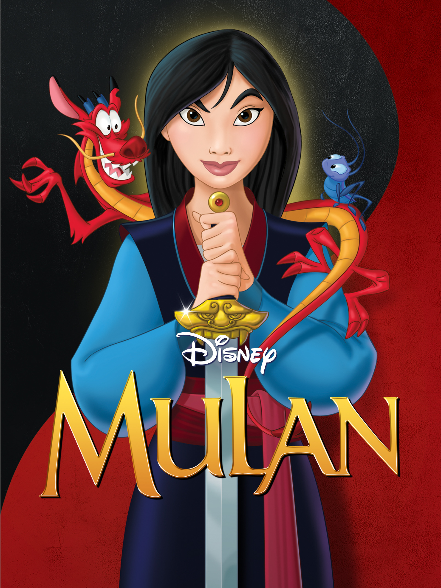
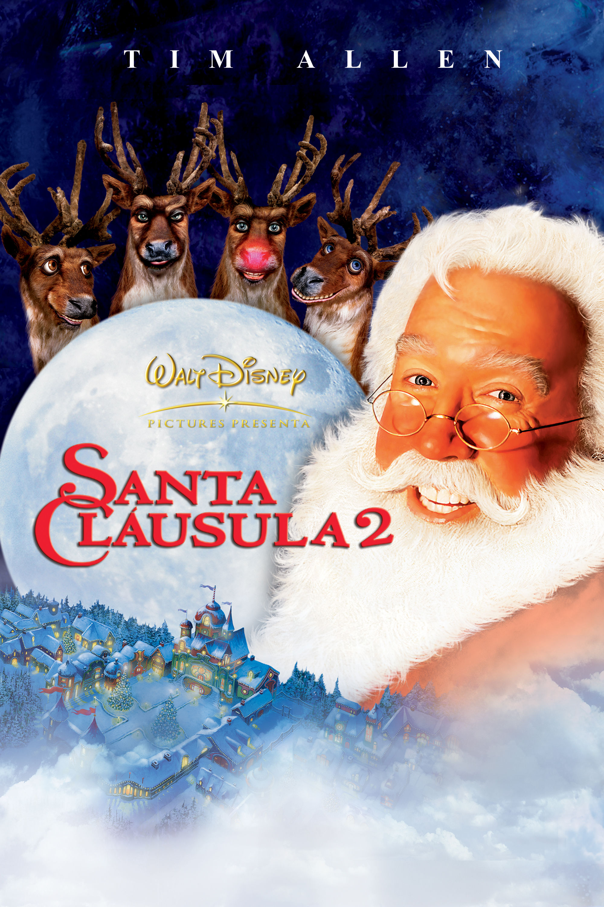

Dragon Ball Super Cap 53
🕒 Cualquier día - 0:00 PMSorbet y Tagamo, antiguos miembros de élite del ejército de Freezer, llegan a la Tierra con la intención de resucitar a su líder. Goku y Vegeta tendrán que alcanzar el nivel de auténticos dioses.
▶ Ver capítuloOtro Viernes de Locos
🕒 Hoy - 5:30 PMMientras se enfrentan a las complicaciones de la unión de dos familias, Tess y Anna descubren que un rayo puede caer dos veces en el mismo sitio.

Mulán
🕒 Hoy - 8:00 PMMulán es una chica valiente que se fuga de casa para hacerse pasar por un chico y combatir en el ejército en lugar de su padre enfermo, protegiendo a China de los Hunos.

Santa Cláusula 2
🕒 Miércoles 24 - 8:00 AMSanta Claus debe casarse antes del día de Navidad si no quiere perder su trabajo para siempre, mientras ayuda a su hijo a salir de la lista de traviesos.
Una Navidad bien Prendida
🕒 Miércoles 24 - 12:30 PMSteve enfrenta un problema cuando su nuevo vecino Danny planea iluminar su casa para que sea vista desde el espacio. Le declara la guerra para no quedarse atrás.